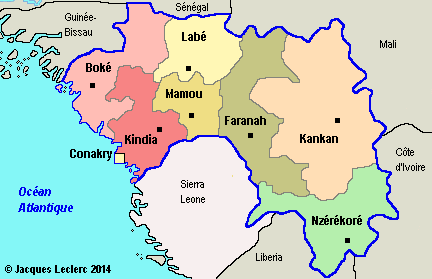
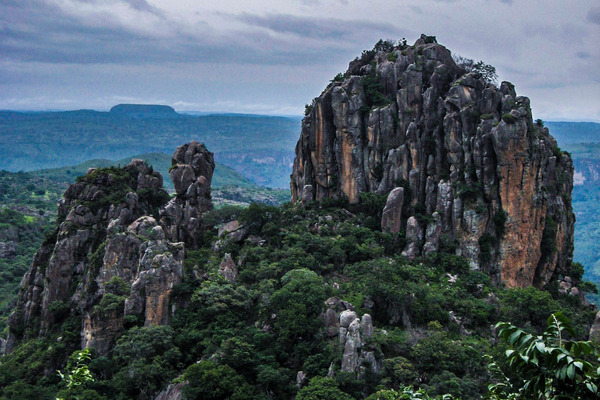
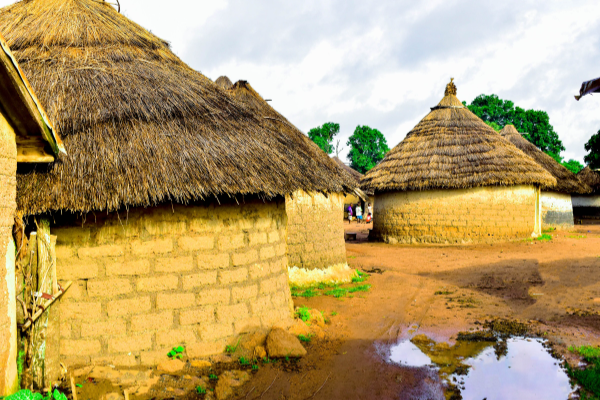
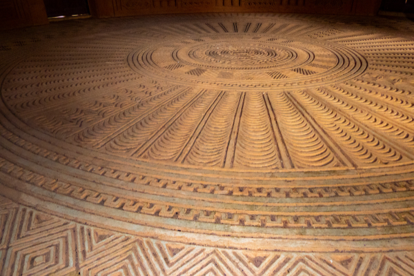
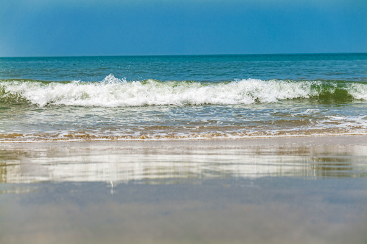

<!-- <!DOCTYPE html>
<html lang="en">
<head>
    <meta charset="UTF-8">
    <meta name="viewport" content="width=device-width, initial-scale=1.0">
    <title>projet nimba</title>
    <link rel="stylesheet" href="style.css">
</head>
<body>


<header>
    <div class="entete">
         
    </div>
    <nav>
        <div>
            <ul >
               <li><a href="#">accueil</a></li>       
               <li><a href="destination.html">destination</a></li>
               <li><a href="service.html">service</a></li>
               <li><a href="contact.html">contact</a></li>
               <li><a href="A propos de nous">A propos de nous</a></li>
               <li><span><i class="fas fa-globe"> français</i></span></li>
          </ul>
       </div> 
    </nav>
</header> 

<section id="accueil">
    <h1>BIENVENUE EN GUINEE</h1>
    <div class="texte">
       <P class="texte-gauche"> Situé à l’extrême Ouest de l’Afrique, la République de Guinée s’étend sur une superficie de 245 857 km2. <br> Son territoire est limité par l’Océan Atlantique à l’ouest, la Guinée Bissau au nord-ouest, le Sénégal et le Mali au nord, la Côte d’Ivoire à l’est, le Libéria et la Sierra Léone au sud. Nature, culture, diversité et philosophies authentiques fondent la Guinée. <br> Quatre (4) mondes y sont réunis, à travers ses quatre (4) régions naturelles ; auxquelles correspondent des types de reliefs, de climats, de faunes et de flores bien distincts. <br> Elle apparaît comme une synthèse touristique de l’Afrique de l’Ouest : Les 300 km de littoral parsemé des Archipels des Îles de Loos, d’Alcatraz, de Tristao et de M’Botini ; couvert de mangroves, s’ouvre à la mer par de merveilleuses plages de sables fins et de coquillages, ainsi que par des immenses estuaires de cours d’eaux. <br> Ils confèrent une beauté singulière à la Basse Guinée.</P> 
       
    </div>
</section>


 <section class="destinations"> 
     <h1>destination</h1>
<div class="destina">
    <div class="destination-item">
      
      <h3>Les Montagnes</h3>
    </div>
      <div class="destination-item">
      
      <h3>Dans les Savane</h3>
    </div>
<div class="destination-item">
      
      <h3>Sur Les Sites touristiques de la Guinée</h3>
    </div>
    <div class="destination-item">
      
      <h3>Sites Cotiers</h3>
    </div>
    <div class="destination-item">
      
      <h3>Sur les Chutes de la Guinée</h3>
    </div>
      <div class="destination-item">
      
      <h3>BIENVENUE AU PARADIS</h3>
    </div>

</div>
</section>

<section id="service">
    <h1>NOS SERVICES</h1>
    <Ul>
        <li>Organisation d'évenements</li>
        <li>Conseration du patrimoine</li>
        <li>Promotion artistique</li>
    </Ul>

</SEction>

<section id="A propos de nous">
    <h1>A propos de nous</h1>
    <p>Découvrez nos dernière nouvelles et projet en cours.</p>
</section>

<!-- <footer id="contact">
   <div>
     <p>contact nous : contact@officenational.com</p>
    <p>&copy; 2025 office national</p>
   </div>
   <div>
    <h4>Adress</h4>
    <p>Adress Email <a href="#contact">officenational@gmail.com</a></p>
   </div>
   <div>
    <h4>information Générales</h4>
    <ul>
        <li>infrastructures</li>
        <li>sécurité</li>
        <li>partenariat</li>
        <li>code du tourisme</li>
    </ul>
   </div>
   <div>
    <h4>liens uiles</h4>
    <ul>
        <li>Présidence</li>
        <li>Gouvernement</li>
        <li>Agence de Promotion des investissement privées</li>
    </ul>
   </div>
</footer>


</body>
</html> -->

<!-- <footer>
  <div class="footer-container">
    <p>&copy; 2025 Office National. Tous droits réservés.</p> -->
    <!-- <ul class="footer-links">
      <li><a href="#">Mentions légales</a></li>
      <li><a href="#">Politique de confidentialité</a></li>
      <li><a href="#">Contact</a></li>
    </ul> -->
<!-- </div>
  <div class="footer-container">
    <div class="footer-logo">
      
      <p>Office National du Tourisme de Guinée</p>
      <div class="social-icons">
        <a href="#"></a>
        <a href="#"></a>
        <a href="#"></a>
      </div>
    </div>

    <div class="footer-links">
      <div>
        <h4>Adresse</h4>
        <p>Conakry, Guinée</p>
      </div>
      <div>
        <h4>Informations Générales</h4>
        <ul>
          <li>Infrastructures</li>
          <li>Sécurité</li>
          <li>Partenariat</li>
          <li>Code du tourisme</li>
        </ul>
      </div>
      <div>
        <h4>Liens utiles</h4>
        <ul>
          <li>Résidence</li>
          <li>Gouvernement</li>
          <li>Agence de Promotion</li>
          <li>Aéroport de Conakry</li>
        </ul>
      </div>
    </div>
  </div>


</footer> --> -->
